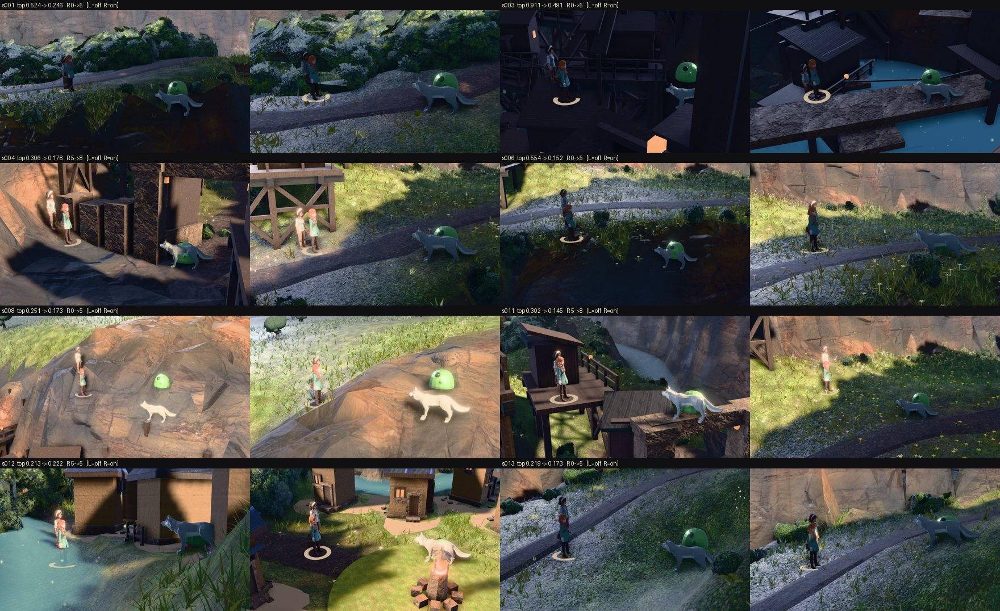
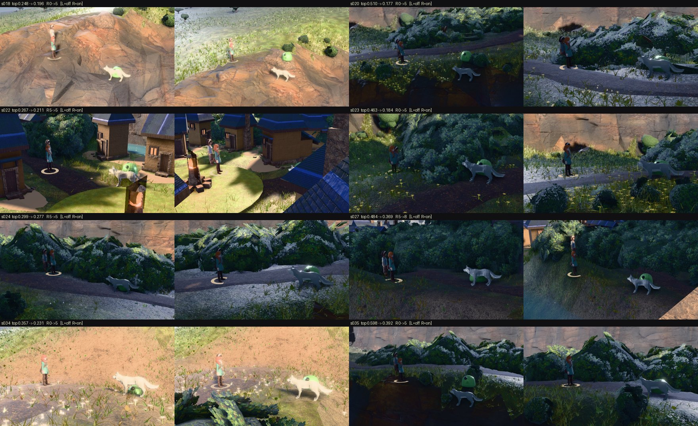
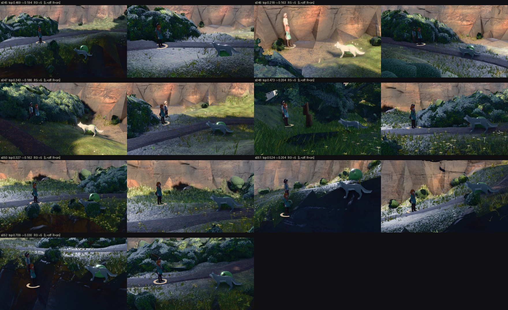

2026-08-09 · instrument tools/battle_surface.mjs · term PLACE.surf in
public/js/battle_world.js · ?bsurf=0 (or --bsurf=0) is the one-build A/B
Three independent by-eye sorts of the same 62-site census agreed on which axis separates a good
place to fight from a bad one: how much of the frame one surface owns — surf.topSurface
and its histogram twin surf.entropy, at sep 0.844 on the round plate, 0.949 on
the round plate against the decide sort and 0.937 on the decide frame. It beat sun exposure
(which shipped instead), sky presence, view.back (what the solver already optimises) and the
tonal metric (which runs backwards as a placement metric). It did not ship because it had no
affordable proxy: a ray grid scored 0.79 and cost 52 ms a candidate against a ~42 ms solve.
docs/qa/battle-placement/proxy-14x8.json reads meshTop ≥ 0.87 at every one of
the 62 sites and exactly 1.00 at many of them, because the valley ground is ONE MESH. "One mesh
owns the frame" is true everywhere. The winning axis was never about meshes — it is a statement about
PIXELS, and it was always a colour histogram.
TONE renders the arena into a 320×180 offscreen target twice per candidate boom; the
without-cast pass IS that frame's background. At ladder time there is no cast at all, so the same
measurement needs one render and no subtraction. The cost hypothesis was right and the quality
hypothesis was wrong.
| proxy | sep vs round sort | sep vs decide sort | sep vs decide rater 2 | ρ vs offline | ms / candidate (p50) |
|---|---|---|---|---|---|
| offscreen 48×27 · topSurface | 0.396 | 0.439 | 0.450 | 0.38 | 2.8 |
| offscreen 64×36 · topSurface | 0.378 | 0.490 | 0.461 | 0.38 | 2.4 |
| offscreen 96×54 · topSurface | 0.463 | 0.530 | 0.500 | 0.41 | 2.2 |
| offscreen 160×90 · topSurface | 0.533 | 0.556 | 0.547 | 0.44 | 2.2 |
| offscreen 320×180 · topSurface | 0.600 | 0.596 | 0.600 | 0.48 | 2.3 |
| offscreen 320×180 · entropy | 0.674 | 0.495 | 0.647 | 0.63 | 2.3 |
| 1280×720 → box ×2 → 320×180 | 0.741 | 0.697 | 0.679 | 0.54 | 8.6 |
| 1280×720 → box ×4 → 320×180 | 0.711 | 0.626 | 0.653 | 0.53 | 7.6 |
| largest connected region, 4³ cube, 96×54 | 0.489 | 0.576 | 0.663 | 0.52 | 2.1 |
| display frame (renderFrame) · topSurface | 0.778 | 0.717 | 0.874 | 0.71–0.75 | 7.3 |
| display frame · entropy | 0.696 | 0.667 | 0.847 | 0.85 | 7.3 |
| (offline ruler, for reference) | 0.644 | 0.697 | 0.895 | 1.00 | n/a |
| ray grid 8×5 "one MESH owns the frame" (2026-08-09, prior lane) | 0.79 (AUC) | — | — | — | 52 |
Data: probe-v1.json, probe-v2.json, stats-v2.json.
"sep" is |2·AUC−1| of good vs bad, the same quantity the placement board reports. ρ is Spearman against
the offline surf.* the sorts were separated by.
renderFrame() reaches sep 0.72–0.87 and ρ 0.85 for 7.3 ms.
--raw=1 measures
the same frames without it), and ow-* ships NoToneMapping anyway, so there is no
curve to miss. The gap is the post passes, not the transfer function.
--mode=nb enumerates exactly the candidate set the shipped ladder collects (the first
accepting ring plus PLACE.extraRings) at all 62 cells and scores each on the display frame.
6.0 candidates per site at p50, max 12.
| question | answer |
|---|---|
| incumbent topSurface, p50 | 0.217 |
| best reachable candidate, p50 | 0.153 |
| sites with a challenger better by ≥ 0.05 | 32 / 62 |
| sites the sort calls BAD that have a reachable candidate under the good/bad threshold | 18 / 22 |
A second refusal on the same candidate set the sun refusal already ranks, with the sun stage's answer as its incumbent — sun first (it is four rays and already shipped), then surface (the stronger axis, but it costs a display frame per candidate).
| knob | value | why |
|---|---|---|
PLACE.surfGood | 0.22 | an incumbent this undominated ends the search after ONE render (display-frame means: good 0.153, acceptable 0.233, bad 0.266–0.288) |
PLACE.surfMargin | 0.06 | a refusal, not a preference — the shape the sun term already has |
PLACE.surfMax / surfBudgetMs | 8 / 140 | a budget, not a hope |
PLACE.surfRes | 320×180 | the offline library's own reduction |
Candidates scored per site: p50 1, p95 8, 154 renders over 62 sites. The median site pays one frame because its incumbent is already undominated.
cost-v1.json): stage p50 34.7 → 49.6 ms, p95 327.7 → 332.1, and
SAME SITE 62/62 — the walk gets longer, the sun answer does not change. They are still live
whenever the surface term is off (?bsurf=0, ?bplace=0).
62 real battles per arm through battle_decide --mode=census, ORBIT.yaw pinned
at −1.4869, arms differing by one assignment (--bsurf=0).
| measure | bsurf=0 | bsurf=1 | on the 23 sites that moved |
|---|---|---|---|
| surf.topSurface p50 (lower better) | 0.218 | 0.183 | 22 improved / 1 regressed |
| surf.entropy p50 (higher better) | 3.711 | 3.984 | 21 improved / 2 regressed |
| surf.backTopSurface p50 (lower better) | 0.245 | 0.210 | 21 improved / 2 regressed |
| sites with topSurface ≥ 0.24 | 29 | 15 | — |
| sites with topSurface ≥ 0.30 | 22 | 10 | — |
| sites with topSurface ≥ 0.40 | 14 | 4 | — |
| sil.edgeRGB p50 (lower better on this axis) | 9.28 | 7.39 | 15 improved / 8 regressed |
| frameL.L50 p50 | 79.5 | 84.7 | 20 improved / 3 regressed |
| sun.shadedFrac mean (lower better) | 0.520 | 0.552 | 0 improved / 3 regressed |
| foes in frame | 124/124 | 124/124 | — |
| 180° rule (axisOk) | 62/62 | 62/62 | — |
| staging refusals | 0 | 0 | — |
| sites staged at ring 0 (the fight stays where you are) | 29 | 15 | — |
| clock | bsurf=0 | bsurf=1 |
|---|---|---|
| staging solve p50 | 45 ms | 98 ms |
| staging solve p95 | 359 ms | 366 ms |
| staging solve max | 381 ms | 405 ms |
| trigger → cast staged (stageMs) p50 | 2138 ms | 2185 ms |
| decide re-solve | 0.4 ms | 0.4 ms |
The 53 ms at p50 is 15 ms of longer candidate walk (the short-circuits coming off) plus 2.5 display frames on average. It is 2% of the trigger-to-staged clock, which is dominated by model loading.
surf.topSurface differs between the two arms by |Δ| p50 0.0002, max 0.0011, and
zero sites differ by more than 0.01. Two things sit out every probe frame for the reasons TONE already
wrote down — the PLAYER'S OWN BODY (staging runs before the fight hides it, so at ring 0 the player
stands in the middle of every candidate frame) and AMBIENT'S MOTES (their boxes are centred 11 m down
the LIVE camera's view axis). Both are visibility flips, never teardowns.
Left of each pair is bsurf=0, right is bsurf=1. 19 clear wins, 3 washes
(s008, s024, s046), 0 regressions by eye. The single objective regression, s012 at 0.213 → 0.222, is
a frame that goes from the party standing in a pond to a village lawn — the ruler disagrees with
the eye by 0.009 and the eye is right, which is what the ±10-point rater spread is about.



census-surf{Before,After}.json) are committed in full.| gate | result |
|---|---|
| battle_sim | ALL ENVELOPES GREEN · 6 engine property tests |
| encounter_sim | ENCOUNTER INTEGRATION GREEN |
| arena_playtest | GREEN — all suites (teardown, no context leak, warm heap drift 1.9 MB) |
| transition_test | PASS 168 assertions, 0 failed · no console errors |
| ray_budget | GREEN W = 2 / 9761 |